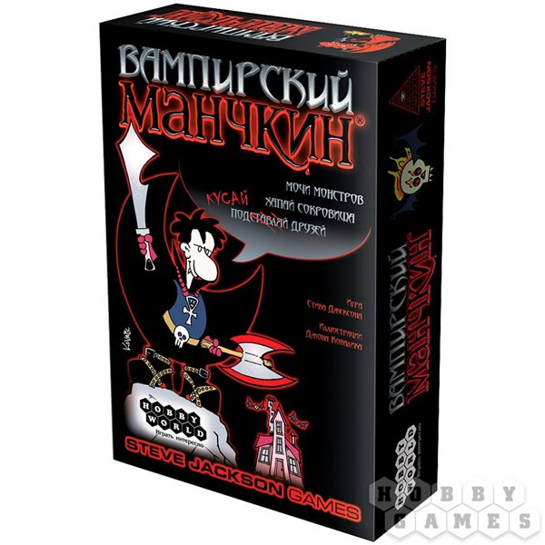

Манчкин Вампирский
«Вампирский Манчкин» — неудержимая сверхъестественная «готишность» для всех поклонников Манчкина! В красно-чёрных тонах на скользкую дорожку выходят упыри, оборотни, феи и прочие чудовища, а в бою пригодятся боевой мэйкап, Секира Раскаяния и Анх Страха. Кто-то, жаждущий человечьей крови, выходит на охоту — бегите или прячьтесь! Всё та же азартная и злорадная пародия на ролевые игры: покажите всем, кто здесь самого десятого уровня!
🎲
Правила игры
Посмотрите видео и почитайте PDF — и можно за стол!
Видео-правила
Правила в PDF
Источник правил: Hobby Games